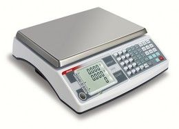

Elektroninės prekybos iššūkiai mažmeninės prekybos rinkai | SEB bankas
 Skip to main content Switch to mobile version. Į viršųMeniu
Prisijungti prie interneto banko
Interneto bankas Privatiems Verslui Interneto bankas English Privatiems Verslui Privačioji bankininkystė Didelėms įmonėms Infobankas Apie SEB Karjera Pradžios tinklalapis Tapti klientu Klientų programos Moksleiviams Jaunimui Senjorams Darbo užmokestis Vaizdo konsultacija „Bankas namuose“ Kasdienė bankininkystė
Mokėjimo kortelės
Debeto kortelės Kredito kortelės Bekontaktės kortelės Bekontakčiai atsiskaitymai telefonu Kelionės užsienyje draudimas Prevencinė mokėjimo kortelių apsauga Kortelių siuntimas paštu Aptarnavimo pirmumo paslauga banko skyriuose Kaip saugiai internetu atsiskaityti kortele? Automatinio valiutos keitimo tvarka atsiskaitant korteleBanko sąskaita ir pervedimai
Banko sąskaita Pinigų pervedimas banko viduje Europinis pinigų pervedimas Tarptautinis pinigų pervedimas Periodinis pervedimas Įmokos ir mokesčiai Elektroninė sąskaita (e. sąskaita) SEPA tiesioginis debetasSEB paslaugų planai
SUMANU SUMANU PLIUS SENJORAS JAUNIMAS MOKSLEIVIS STANDARTASKita
Grynųjų pinigų išmokėjimas Grynųjų pinigų įmokėjimas Įkainiai El. bankininkystėPaslaugos internetu
Interneto bankas Mobilioji programėlė Prisijungimo priemonės „Finansų planuotojas“ Investavimo paslaugos internetu Elektroninių dokumentų pasirašymo portalas Virtualus konsultantasKita
Paslaugos telefonu Banko pranešimai SMS žinutėmis Kaip saugiai naudotis banko paslaugomis? Atviroji bankininkystė Kreditai ir lizingasKreditai
Pasirinkite, kokiam tikslui Jums reikia paskolos Būsto kreditas Kreditas įkeičiant turtą Vartojimo kreditas Saugaus skolinimosi priemonės Valstybės iš dalies kompensuojamas būsto kreditas Būsto kreditas pirmajam būstui įsigyti su valstybės finansine paskataLizingas
Automobilių lizingas Žaliasis lizingas Taupymas ir investavimasTaupymas ir investavimas
Naujos taupymo galimybės Indėliai Obligacijos LR Vyriausybės taupymo lakštai Struktūrinės investavimo priemonės Investiciniai fondai Fondai, kurių vienetais prekiaujama biržoje Akcijos Periodinis taupymas ir investavimas PensijaPensijos kaupimas ir išmokėjimas
I pensijų pakopa II pensijų pakopa III pensijų pakopa DraudimasDraudimas
Asmens draudimas „Aprūpinta senatvė“ „Vaiko ateičiai“ „Saugus kreditas“ Būsto draudimas Pradinis puslapis PrivatiemsNAUJIENOS - 2019 07 25 - 11:30
Elektroninės prekybos iššūkiai mažmeninės prekybos rinkai
2018-aisiais mažmeninės prekybos įmonių bankrotų procentas JAV buvo rekordiškai didelis – veiklą nutraukė ar didelę dalį parduotuvių uždarė tokios bendrovės kaip „Sears“, „Toys R US“, „Kmart“, „Bon-Ton“ ir kiti. Prognozuojama, kad kas ketvirtą JAV fizinę mažmeninės prekybos parduotuvę dar gali tekti uždaryti. „Moody‘s“ pakeitė Europos mažmeninės prekybos rinkos augimo prognozę į neigiamą, nors visa tai vyksta augant namų ūkių vartojimo mastui. Šių pokyčių kaltininkė – elektroninė prekyba, užimanti didžiausią dalį tradicinės mažmeninės prekybos augimo, o kai kuriose šalyse dar ir atsiriekianti fizinių parduotuvių rinkos dalį.
Gali pasirodyti, kad šie pokyčiai vyksta tik užsienio rinkose, tačiau Lietuvoje elektroninė prekyba taip pat įsibėgėja – rinkos dalis mažmeninės prekybos sektoriuje jau siekia apie 7,1 proc. Jei prieš penkmetį nusprendę apsipirkti internetu lietuviai dažniausiai ieškojo buitinės technikos, elektronikos, kvepalų, knygų ir kitų prekių, kurių kainas lengva palyginti, o pristatymo terminas nėra lemiamas veiksnys, tai šiandien situacija smarkiai pasikeitusi. Prekybininkams vis daugiau investuojant į visas internetinės prekybos grandis daugelį prekių galime atsiimti kad ir tą pačią dieną.
Maistą, vaistus ar statybines prekes lietuviai vis dar dažniausiai perka fizinėse parduotuvėse. Tačiau į šią rinką dar tik ruošiasi įžengti tokie mažmeninės prekybos banginiai kaip „Rimi“, „Depo“ ar „Ikea“. Dabar jau apie 40 proc. elektronikos prekių Baltijos šalių gyventojai užsako internetu, o virtualiai nuperkama ir kas ketvirta batų pora.
SEB analitikų atliktas tyrimas parodė, kad vien internete prekiaujančių Baltijos šalių įmonių vidutinis augimo tempas siekia įspūdingus 20 procentų. Nors pusė šių įmonių yra nuostolingos, o daugumos jų pelno marža yra mažesnė negu 1 procentas, tai suprantama – rinkos vystymosi laikotarpiu dalyviai stengiasi užimti kuo didesnę jos dalį, vildamiesi, kad vykdoma veikla bus pelninga ateityje.
Tai tik pradžia – nėra prielaidų manyti, kad 30-metis lietuvis, šiuo metu apsiperkantis internetu, ateityje savo įpročius pakeis. Atvirkščiai, lietuvius, kuriems svarbi kaina, lengviau išvilioti iš fizinių parduotuvių į internetą, negu atvesti juos atgal. Tad akivaizdu, kad mažmeninė prekyba internete yra pasiruošusi augti.
Pažvelkime į rinkas, kuriose elektroninė prekyba pažengusi gerokai toliau negu Lietuvoje. Švedijoje elektroninės prekybos rinkos dalis siekia apie 10 proc. ir šioje šalyje per pastaruosius šešerius metus beveik nė vienos prekybos šakos pelningumo norma neaugo. Vienintelė atsilaikiusi sritis – maisto prekės. JAV elektroninės prekybos dalis siekia 14 proc., o rezultatas – uždaromos parduotuvės ir liūdnos prognozės fiziniams mažmenininkams, nespėjantiems gana greitai prisitaikyti prie besikeičiančių rinkos sąlygų.
Didžioji Britanija turi pažangiausią elektroninės prekybos rinką pasaulyje (17 proc. visos mažmeninės prekybos). Per pastaruosius penkerius metus šioje šalyje buvo uždaryta apie 8 proc. fizinių parduotuvių, o didieji prekybos centrai ieško būdų prisitaikyti prie sparčiai besikeičiančios prekybinės aplinkos.
Lietuvoje elektroninė prekyba užima dar palyginti nedidelę mažmeninės prekybos rinkos dalį, tačiau sparčiai auga. Ekonomistai prognozuoja du galimus scenarijus. Pirmasis – lėtėjančio augimo: Lietuvoje kartosis Didžiosios Britanijos scenarijus ir dabartinis 20 proc. per metus augimas iki 2026-ųjų sulėtės iki 12,5 proc. per metus. Antrasis – spartaus augimo: 20 proc. per metus augimas tęsis ir, jei jis nesustos, po 8 metų elektroninė prekyba sudarys 30 proc. visos mažmeninės prekybos. Tad kyla gana didelė grėsmė, kad elektroninė prekyba atsirieks vis didesnę rinkos augimo dalį, sukeldama spaudimą fizinėms parduotuvėms.
Kad ir kuris scenarijus pasitvirtintų, elektroninė prekyba augs ir jos augimas neišvengiamai viršys tradicinės mažmeninės prekybos augimo tempą. Tai reiškia dar aršesnę konkurenciją tarp prekybininkų, kuriems elektroninė prekyba turi tapti kasdieniu pardavimo kanalu norint išlaikyti turimas pozicijas. Keičiasi ir prekybos centrų poreikiai – prisitaikydami jie turi ieškoti originalių sprendimų, pavyzdžiui, keisti dalį savo plotų į pramogų zonas, kavines, laisvalaikio erdves, pritaikyti parduotuves ne tik pirkti, bet ir patogiai atsiimti užsakytas prekes.
Dar vienas svarbus akcentas – didesnes galimybes augti turi rinkos dalyviai, kurie investuos į plėtrą internete ar didins koncentraciją rinkoje, įsigydami esamus rinkos dalyvius. Staigmenų čia gali pateikti ne tik vietiniai ar kaimyninių šalių, tokių kaip Lenkija, prekybininkai, bet ir pasauliniai milžinai – „Amazon“, „Ebay“, „Aliexpress“ ir kiti.
Komentaro autorius Vilius Juzikis, SEB banko valdybos narys, Verslo bankininkystės tarnybos direktorius
2020 10 28 Tyrimas: Lietuvos smulkusis verslas – skaitmeninis Baltijos šalių tigras 2020 10 27 SEB: pandemija pavėlino būsto paskolų sezoną ir pastūmėjo pirkti erdvesnius namus 2020 10 26 SEB siūlo geriausiu pasaulyje pripažintą elektroninės prekybos mokėjimo sprendimą 2020 10 23 Kaip pandemija pakeitė asmeninių finansų tvarkymą? 2020 10 22 Ar Baltijos šalių įmonės skiria pakankamai dėmesio finansinių rizikų mažinimui? 2020 10 22 Skelbiami SEB banko grupės Lietuvoje 2020 m. trijų ketvirčių veiklos rezultatai 2020 10 21 SEB bankas „Mantinga“ įmonių grupės plėtrai suteikė 13,8 mln. eurų finansavimą 2020 10 21 Sėkmingas pusmetis ir grūdų augintojams, ir pieno gamintojams 2020 10 15 Pandemija automobilių įperkamumo Lietuvoje nesumažino, gyventojus vis labiau domina ekologiškos alternatyvos 2020 10 14 Valdžia kitais metais liks dosni augančios skolos sąskaitaArchyvas
Prenumerata
Prenumeruokite leidinius ir naujienas
Pensija
Kontaktai
Privatiems klientams+370 5 268 2800 +370 5 268 2800
(I–V 8.00–20.00
VI 9.00–18.00
VII 9.00–16.00)
Verslo klientams
+370 5 268 2822 +370 5 268 2822(I–V 8.00–17.00) „Skype“
Skambinkite naudodami „Skype'ą“
Skambinti SEB.Lietuvoje Skambinti SEB.LietuvojeSEB grupė Lietuvoje turi vieną oficialią paskyrą programoje „Skype“. Šios paskyros pavadinimas yra „SEB.Lietuvoje“.
Skambinant bankui naudojantis šia programa, rekomenduojama visada naudotis interneto svetainėje www.seb.lt suteikiama galimybe prisijungti spustelint mygtuką „Skambinti SEB.Lietuvoje“, o ne naudojantis duomenimis, sukauptais programos „Skype“ paskyros archyve.
Spustelėjus šį mygtuką ir susijungus su banku, naudojantis „Skype“ programa galima tik kalbėtis – nėra galimybės bendrauti raštu ar matyti vaizdo.
Atkreipiame dėmesį, kad SEB darbuotojai patys neskambina klientams naudodami programoje „Skype“ paskyrą „SEB.Lietuvoje“, niekada neprašo ir neprašys klientų pasakyti konfidencialių duomenų ar slaptažodžių.
Pokalbiai skambinant naudojantis paskyra „SEB.Lietuvoje“ programoje „Skype“ nėra apmokestinami (klientai moka už interneto ryšį pagal jų su interneto ryšio tiekėjais sudarytas sutartis).
Skambinant naudojantis paskyra „SEB.Lietuvoje“, bankas teikia paslaugas tokiomis pat sąlygomis, kokios taikomos teikiant paslaugas telefonu (privatiems klientams numeriu +370 5 268 2800 , o verslo klientams – +370 5 268 2822 ).
Rašykite mumsRašykite mums
Jei turite klausimų dėl savo sutarčių ar asmeninių duomenų , parašykite mums pranešimą prisijungę prie interneto banko : Prisijungti Prisijungti Jei turite bendro pobūdžio klausimų , užpildykite ir pateikite šią formą . Jei reikia informacijos apie vartotojų ir finansų rinkos dalyvių ginčų nagrinėjimo tvarką , spustelėkite šią nuorodą . Lizingo departamento kontaktai GrįžtiRekomenduojame prieš sudarant bet kokią finansinių paslaugų sutartį atidžiai išnagrinėti paslaugų teikimo sąlygas ir, jei reikia, pasikonsultuoti su banko darbuotojais.
Pradinis puslapis Privatiems Sparčioji paieška Skaičiuoklės Valiutų kursai Palūkanų normos Finansų rinkos Įkainiai privatiems klientams Įkainiai verslo klientams Kontaktai Klientų aptarnavimo vietos SEB Lietuvoje kontaktai ir rekvizitai SEB atstovai žiniasklaidai Svarbi informacija ir dokumentai Bendrosios taisyklės Asmens duomenų tvarkymo politika (PDF) Investuotojų apsauga Išlyga dėl kai kurių klientų Klientų pretenzijų nagrinėjimas Prašymų formos verslo klientams Svarbi informacija banko „Snoras“ indėlininkams Socialiniai tinklai Facebook Youtube Linkedin InstagramAB SEB bankas | Gedimino pr. 12, LT-01103 Vilnius | Informacija tel. privatiems klientams +370 5 268 2800 I–V 8.00–20.00, VI 9.00–18.00, VII 9.00–16.00 bei verslo klientams +370 5 268 2822 I–V 8.00–17.00 | Rekvizitai
Attention! Your web browser does not correspond to the requirements needed to visit SEB website. Please change web browser or device that you use for browsing the site.
Attention! Your web browser does not correspond to the requirements needed to visit SEB website. Please change web browser or device that you use for browsing the site.
EnglishSiekiame pagerinti jūsų naršymo patirtį, todėl savo svetainėje naudojame slapukus. Daugiau apie tai sužinoti galite peržiūrėję Slapukų politiką . Norėdami peržiūrėti ar pakeisti slapukų nustatymus, spustelėkite "Keisti nustatymus".
Sutinku Keisti nustatymus